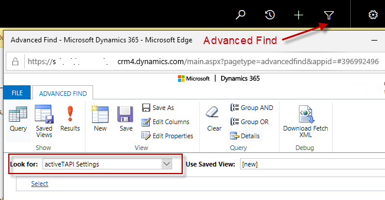

Solution Components
The activeTAPI Managed Solution contains the following components.
Entities
Note
All entities are configured to show up under Settings --> Extensions. However, with Dynamics 365 Online - especially if you installed the Solution from AppSource - all mspro_ entities are not shown in your solution. The only way to display those entities is using Advanced Find.

mspro_servicemessage
This is a core entity of the MSPro-Dynamics Services Platform. This entity does not have a user-interface.
mspro_settings
This entity contains all settings required for activeTAPI. After solution import, this entity is empty and the configuration keys need to be set manually, when required (see activeTAPI configuration).
JavaScript
mspro_/js/activeTapi.js
Contains the activityTAPI functionality which will be active on the form where this script is beeing used (see Extend Integration). OnForm.Load() activeTAPI.js registers OnChanged handlers, for all Phone attributes, as follows:
onLoad: function (executionContext) {
...
// ZERO CONFIG:
// * get all attributes with format = 'phone'
// * Add 'fax' - which is not a 'phone' field :-(
// and register activeTAPI handle for these fields.
//
formContext.data.entity.attributes.get().forEach(function (a)
{
if (a.getFormat() == 'phone' || a.getName() == 'fax')
{
// ... register on attribute changed ...
register onAttributeChanged() handler
}
}
}
onAttributeChanged() // _formatTelephoneNumber
{
mspro.platformServices.sendMessage("ActiveTapi.FormatNumbers", ...
}
mspro_/js/platformServices.js
This script belongs to MSPRo Dynamics Platform Services. It contains only a single method allowing a form to execute platform services. activeTAPI.js uses it to send messages to 'the platform' when a form attribute's content changed Attribute onChanged() Event:
mspro.platformServices.sendMessage("ActiveTapi.FormatNumbers",
{
"phoneNumbers" : [ changedAttribute.getValue() ],
},
function (result, data) { ...
Note
It is important to mention that the scipts do communicate with your Dynamics CRM 365 server, using standard SDK functionality, only:
Xrm.WebApi.createRecord("mspro_servicemessage", serviceMessage).then( ....
The client will not call or use any resource outside of your safe & sandboxed Microsoft Dynamics CRM 365 environment!
Plugin
activeTAPI uses one Plugin, which belongs to MSPRo Dynamics Platform Services. Its functionality is to execute the business logic that was requested by the client (see JavaScript SendMessage). In case of activeTAPI, the sandboxed Plug-in executes the REST calls to the activeTAPI-REST Service.
Note
This means, all activeTAPI logic is server-side and executes in the context of this Plugin.
The Plug-in is registered on the mspro_servicemessageentity as follows:


[!NOTE]
It is important to notice that this Plug-in is registered on the mspro_servicemessage entity, only, which is part of the activeTAPI Solution. The Plug-in does run in the pipeline of any existing entity!